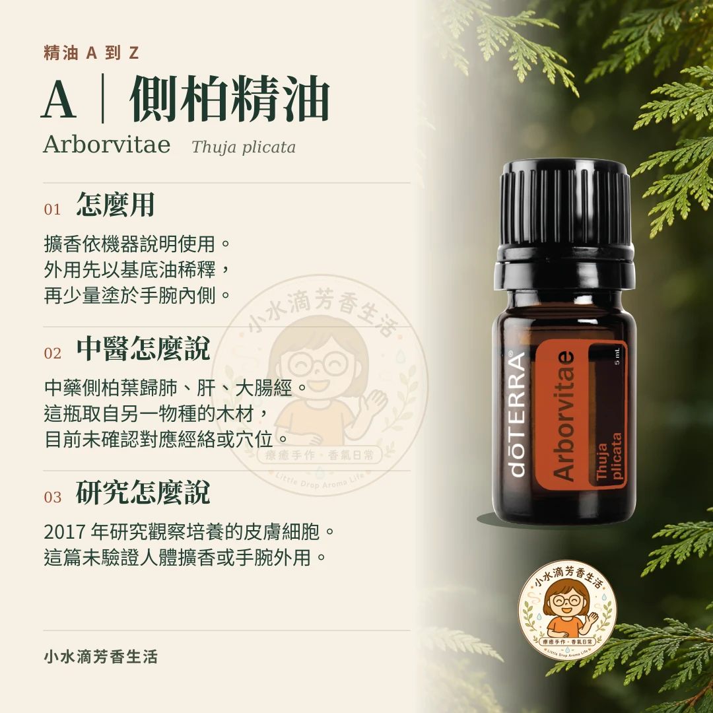

小水滴芳香生活・精油 A 到 Z
A｜側柏精油
Arborvitae
十一月，天暗得早。傍晚回到家，包包一放，我想先泡杯熱茶。這時候擴一點側柏，淡淡的木頭香，像把散步時經過樹林的氣味帶回家。


怎麼用
擴香｜側柏 1 滴＋檸檬 1 滴側柏是沉穩的木頭香，加一點檸檬，聞起來就亮了一些。依擴香機說明使用，保持空氣流通。
想把木質香帶出門，可以將側柏以分餾椰子油稀釋，先小範圍試用，再少量抹在手腕內側。
看馨香守護的精油使用方式 →中醫怎麼說
對照經絡圖，拇指指甲旁的少商、虎口附近的合谷、腳背上的太衝，分別在肺經、大腸經和肝經。
這三條經是中藥側柏葉的傳統歸經。今天拿來調香的這瓶，則是從北美側柏的木材萃取。下次看到「側柏」兩個字，先分清楚用的是葉還是木。
去馨香守護認識穴道 →研究怎麼說
2017 年，研究人員把側柏精油加到培養皿裡，觀察皮膚細胞怎麼反應。他們發現，有幾個跟發炎有關的訊號變少了。這是實驗室裡觀察到的細胞反應。
閱讀研究｜Han 與 Parker，2017 →